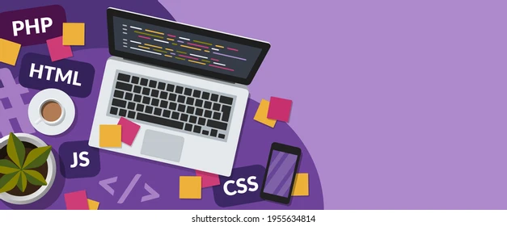

rogramadora con conocimiento en back-end y front-end.
Trabajo con diferentes sistemas operativos y lenguajes de programación,
Estableciendo estrategias para cada parte del proceso de desarrollo web. diseño y aplicaciones web basándo en principios del diseño UX/UI.
Dessarollo de actividades frontend relacionadas con la implementación de una aplicación de escritorio multiplataforma, como tableros de escritorio estáticos, mecanismo de identificación de usuarios, visualización.
Creación, definición, implementación y ejecución del Plan de Marketing Digital siguiendo las pautas marcadas por el Plan de Marketing de la empresa,
así como el reporte de los principales indicadores clave (KPI’s) de rendimiento de su departamento.